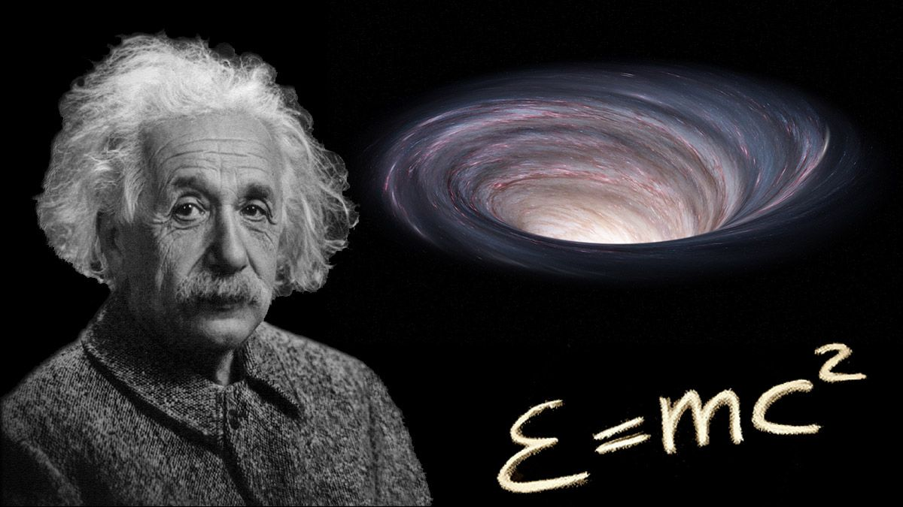

| INVESTIGACIÓN SOBRE LA DILATACIÓN DEL TIEMPO | ||||
| Inicio Investigación El horizonte de sucesos como frontera temporal Intercambio del espacio-tiempo | Estudio científico del tiempo en agujeros negros | |||
GaleríaImágenes relacionadas con agujeros negros y la relatividad.  |
PUBLICIDAD | PUBLICIDAD | ||
Contenido principalLa dilatación del tiempo es un fenómeno descrito por la teoría de la relatividad general, desarrollada por Albert Einstein. Esta teoría establece que el tiempo puede transcurrir a diferentes velocidades dependiendo de la gravedad. En el caso de los agujeros negros, la gravedad es extremadamente intensa, lo que provoca que el tiempo pase mucho más lento en comparación con zonas alejadas del campo gravitatorio. Diversas investigaciones científicas han confirmado este fenómeno mediante experimentos con relojes atómicos y observaciones astronómicas. Aunque no se puede observar directamente un agujero negro, sus efectos sí son medibles. Este estudio es fundamental para comprender el universo, ya que permite explicar cómo funcionan los objetos más masivos y cómo el tiempo y el espacio están conectados. |
VideoExplicación general del tema |
|||
|
Dato 1 Einstein propuso la relatividad general. |
Dato 2 La gravedad afecta el tiempo. |
Dato 3 Se ha comprobado con relojes atómicos. |
Dato 4 Es clave en la física moderna. |
|
| © 2026 - Karla Rubí | ||||